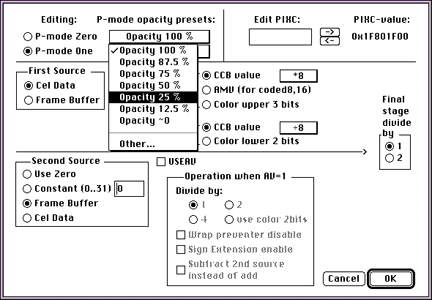
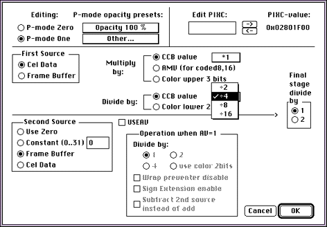
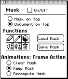
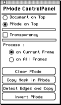
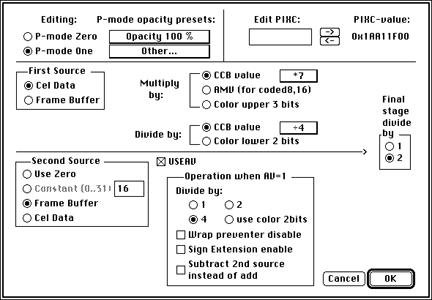

Each cel has a PIXC; which determines some of the cels attributes. By
default, cels are rendered as opaque, but you can change the PIXC to
enhance luminance for the whole cel, create a ghost effect by mixing the
entire cel with the background (making it translucent), or create a
shadow.
Each cel actually allows for two PIXC settings, allowing you, in effect,
to make some pixels in the cel translucent (one PIXC settings group) while
all others remain opaque.
For 8-bit coded cels-you can create special effects on a
color-by-color basis. For example, you can enhance the luminance of all
shades of red for the lights of a police car.
For 6-bit coded and 16-bit uncoded cels-you can create special effects
on a pixel-by-pixel basis. First you create a mask, then mix the cel
pixels in the region of the mask with background pixels to create the
desired special effect.
The two possible PICX settings a cel can choose from are often referred to
as
P-Modes.
This section steps you through mixing background image pixels and cel
pixels to create a ghostlike translucent effect.
To create a translucent cel, follow these steps:
Convert the source art to a 3DO cel of your choice.
If you wish, assign a background color to create an irregularly shaped
cel.
In the Set 3DO Object Type dialog select the P-Mode box in the CCB
Settings column.
The P-Mode pop-up menu appears.
Select Make it 1 from the pop-up menu.
This instructs the 3DO hardware to use the PIXC settings specified by
P-Mode 1 for the whole cel.
Note: P-Mode 1 and P-Mode 0 are just names that were chosen and
do not imply that P-Mode is on or off.
From the 3DO Options menu, select Set CCB.
The Load CCB Settings dialog appears.
Click the Translucency Options button.
The Translucency Options dialog appears (see Figure 1).

Figure 1: Translucency Options settings for 25 percent
translucency.
Set up the Translucency Options dialog as follows (see Figure 1 above):
Click the P-Mode One button
From the P-Mode presets pop-up menu select Opacity 25%.
For the first source, click the Cel Data button.
For the second source, click the Frame Buffer button.
Leave the other options at their default settings.
Click OK to verify the settings.
All pixels in the cel that you want to be translucent-a ghost perhaps-will
use the P-Mode One setting. The translucent effect is attained by
appropriately mixing the image (frame buffer) pixels with the cel (cel
data) pixels. Because of this, the second source must be defined as the
frame buffer, not zero.
For more information on how the 3DO system hardware can manipulate image
and cel data to create special effects, see
Programming 3DO
Graphics
This section explains how you can use per-color P-Mode for an enhanced
luminance special effect.
Basics of per-color P-Mode
With an 8-bit coded cel, you can set the P-Mode on a per-color basis. As a
result, you can affect pixels of a selected color (or colors) in the cel.
You can mix those pixels with the background image for translucency
(stained glass effect), or use a multiplier differently to enhance
luminance (lights) or reduce luminance (shadow). If you alternate a cel
with enhanced luminance with one of regular luminance, you can create a
flashing-light effect when the animation is displayed.
How to enhance luminance of selected colors
To enhance the luminance of selected colors in a cel, follow these
steps:
Convert source art to an 8-bit coded cel.
If you wish, assign a background color to create an irregularly shaped
cel.
In the 3DO palette grid, shift-select the colors for which you want to
enhance luminance.
Click the P-Mode box in the bottom left region of the Set 3DO Object
Type dialog, then select Make it 1 from the pop-up menu to the right of
the function buttons.
From the 3DO Options menu, select Set CCB.
The Load CCB Settings dialog appears.
Click the Translucency Options button.
The Translucency Options dialog appears.

Figure 2: Translucency Options settings for enhancing
luminance.
Set up the Translucency Options dialog as follows (see Figure 2):
Click P-Mode One.
For the first source, click Cel Data.
For the second source, click Frame Buffer.
In the Multiply by field, make sure CCB is selected, then choose 1
from the pop-up.
In the Divide by field, make sure CCB value is selected, then choose 4
from the pop-up.
Click OK to apply the setting.
Here's the effect of your settings: By default, the first source is
multiplied by 8, then divided by 8. If you divide by 4 instead (and still
multiply by 8), you in effect enhance the luminance. To further enhance
luminance you can divide by 2. To darken the color for a shadow effect,
divide by 16 for this option.
If you are working with a 6-bit coded cel or a 16-bit uncoded cel, you
have the option of using a per-pixel P-Mode. You can create a mask to mark
the regions of the cel that you want to be translucent, then select P-Mode
settings that will make all areas of the cel one P-Mode (for example,
opaque) and all areas defined in the mask a different P-Mode (for example,
translucent).
This makes it possible, for example, to mask a window to become
translucent green, or to mask the eye of a creature for which you want to
enhance luminance.
Creating a translucent area
Creating a translucent area inside an opaque cel consists of two basic
steps:
Defining the mask
Choosing the CCB settings
To create the mask, follow these steps:
Convert your source art to a 6-bit coded cel or a 16-bit uncoded cel.
The cel type you choose depends on the number of colors in the source
art and the memory you expect to have available: A 16-bit uncoded cel
allows for thousands of colors but needs over twice the memory of a 6-bit
coded cel.
From the Windows menu, choose Show Mask Panel.
Click the Keep Mask button on the dialog that appears.
This provides the same mask on all the frames. Since you will define
the translucent area using a mask, this setting must be in place.

Figure 3: Mask panel.
From the 3DO Options menu, select Show P-Mode Control Panel.
A draft page appears underneath the source art for P-Mode. When you
first open the control panel, the is source art is on top, the P-Mode
draft page underneath.

Figure 4: P-Mode control panel.
Define the area of the cel that you want to be translucent. For
example, you could select an area for a translucent window.
From the Goodies menu, select Mask, then choose Mask Selection Only
from the submenu.
In the P-Mode control panel, click the Copy Mask in PMode button, then
click the PMode on Top button.
You should see the area you selected pasted in as a black mask. To
verify you have masked the correct area, you can make the draft page
transparent by clicking the Transparency button.
To specify how to paint the selected area, change CCB settings as follows:
From the 3DO Options menu, choose Set CCB.
The Load CCB Settings dialog is displayed.
In the Load CCB Settings dialog, click the Translucency Options
button.
The Translucency Options dialog appears.

Figure 5: Translucency Options settings for 12.5 percent
opacity.